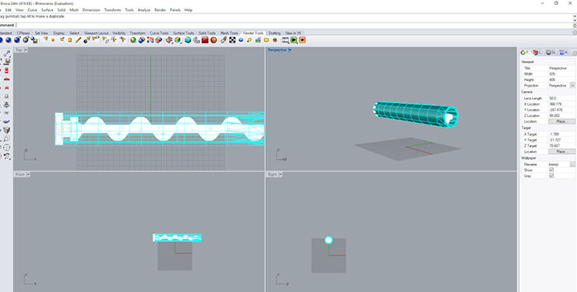

WEEK 5 (22 February 2017)
[3D Scanning and Printing]
This week The 3D scanning and printing assignment is to test the designs rules for your printer(s) (group project).
Design and 3D print a small object that could not be substractively.
3D scan and object (optionally print it).
First Step: Testing Design Rules In Fablab Aldeias do Xisto we have the Witbox, the Fortus 250, the zmorph 3D and two Prusa i3. To send the prints to the printers we used Cura, which is an open source 3D printing software application.
I printed a test piece to my final project Cat Feeder on the Prusa i3 using PLA. The result was not good as you can see below.
I'm drawing the piece (a drill bit to my final project) with Rhino, this continues to be my favorite tool.


This is not a very small object but I I took advantage from this assigment to build this part of my final project.
After that I saved the file to a "STL file" and I opened it on the Cura, and I also set the object to the right position (Rotated the object 90º)

After that I chose the printer, in this case it was the Hephestes Prusa i3, and the object was grey because the dimensions were not ok, the object was oversized, so I changed the scale of the object to 0.75 in order to fit inside the machine.

After that I'm going to click on "File" and "open file" then I selected the "documents" icon and finally chose the correct definitions input, after that I gone to "view mode" and I saw the Layers and the X.Ray.
After these steps I turn on the 3D printer ( Hephestos) and I went to the SD Card to pass the file to the 3D printer.

I selected the right file (Brocal1) and did OK, then I just wait until the printer reaches 220 degrees to start printing

This first test did not work very well, changing the scale of the drawing was not a good idea.

I decided to cancel the printing, because it was not going well, and also this piece takes a lot of time to print, as I had already mentioned this is not a very small object ...

So I decided to drew a small object that could not be substractively, I decided to build a cube with a ball inside.


After that I saved the file to a "STL file" and I opened it on the Cura, and I repeated all the steps again


Printing again:


After 3 hours of printing the result is good and the same as expected...

After 4.15 hours of printing the piece is finally ready, and looking good
Final Result:
3D Scanning
For the 3D Scanning portion of this weeks assignment I started out trying 123D Catch on my phone. To learn about this app follow this link: 123DCatch. This app allows the user to take a bunch of pictures of an object from different angles and heights and then processes the images into a 3D model. I decided to try this app on a mug since it was a pretty simple object. After taking photos of the mug from different angles and heights (Figures 13 and 14) the photos are then reviewed for clarity because the app gets confused if pictures are blurry. Once the images have been reviewed, they are then processed to a 3D model.
I also wanted to try a different techique as well at 3D scanning